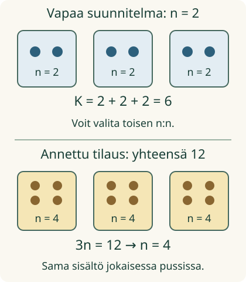

<link rel="stylesheet" href="lesson.css">
<section class="vi-lesson">
  
<section data-teaching-step="1-frame1" data-lesson-role="teaching-step"><div class="lesson-intro"><h2>Sama kirjain, kaksi tehtävää</h2></div>
  <p>Loikka pakkaa kortteja kolmeen pussiin. Jokaiseen tulee yhtä monta. Suunnittelussa määrä on valittavissa. Valmiista tilauksesta määrä pitääkin selvittää.</p>
  <p><strong>Tavoitteesi:</strong> käytät samaa kirjainta ensin muuttuvana määränä ja sitten annetun ehdon määräämänä tuntemattomana.</p></section>
<section data-teaching-step="1-frame2" data-lesson-role="teaching-step"><h3>Kolme yhtä suurta ryhmää</h3>
  <p>Laita kolmeen pussiin kaksi korttia kuhunkin. Yhteensä on 2 + 2 + 2 = 6 korttia. Jos jokaiseen tulee viisi, yhteensä on 15.</p>
  <figure data-lesson-role="worked-example"></figure>
  <p><strong>n tarkoittaa yhdessä pussissa olevien korttien lukumäärää</strong>, ei pussia eikä kortin nimeä. Kokonaismäärä on K = n + n + n = 3n. Yhden suunnitelman kaikki n:t tarkoittavat samaa lukua.</p></section>

  
<section data-teaching-step="2" data-lesson-role="teaching-step">
<h3>Esimerkki 1: n saa vaihdella</h3>
  <p>Vapaassa suunnittelussa voit valita n = 2 tai n = 5. Silloin K on 6 tai 15. Määrät muuttuvat yhdessä säännön K = 3n mukaan. Eri suunnitelmissa n voi saada eri arvoja.</p>
</section>

  
<section data-teaching-step="3" data-lesson-role="teaching-step">
<h3>Esimerkki 2: annettu määrä rajoittaa</h3>
  <p>Valmiissa tilauksessa kortteja on yhteensä <strong>12</strong>. Silloin 3n = 12. Nyt kysymys ei ole uudesta vapaasta valinnasta. Tuntematon sisältö on n = 4, koska 4 + 4 + 4 = 12. Ehdotuksen kokeilu ei muuta jo pakattuja kortteja.</p>
  <p>Molemmissa merkinnöissä on yhtäsuuruusmerkki. Kirjaimen tehtävän ratkaisee <strong>tilanne ja annettu ehto</strong>, ei merkki yksin.</p>
</section>

  
<section data-teaching-step="4" data-lesson-role="teaching-step">
<h3>Virhe: oikea summa ei vielä riitä</h3>
  <p>2 + 4 + 6 on 12. Se ei silti kuvaa tilausta n + n + n, koska pusseissa piti olla yhtä monta. Sama n ei voi tässä tarkoittaa yhtä aikaa lukuja 2, 4 ja 6.</p>
  <p>Eri kirjaimet taas voivat tarkoittaa eri lukuja <em>tai samaa lukua</em>. Esimerkiksi a + b = 8 sallii sekä a = 3, b = 5 että a = 4, b = 4, jos muita ehtoja ei ole.</p>
</section>

  
<section data-teaching-step="5" data-lesson-role="teaching-step">
<section data-lesson-role="question"><h3>Ajattelutauko</h3><p>Voiko n = 5 toimia molemmissa tilanteissa?</p><details data-lesson-role="answer"><summary>Paljasta ajatus</summary><p>Se toimii vapaassa suunnitelmassa: yhteensä tulee 15. Se ei vastaa 12 kortin tilausta. Jos tilaus olisikin 15, sen tuntematon olisi 5.</p></details></section>
</section>

  
<section data-variable-integration aria-label="Suunnitelma ja annettu tilaus"><section data-teaching-step="6-frame1" data-lesson-role="teaching-step"><details data-lesson-role="teaching-step"><summary>Kokeilen ensin kuvallisella mallilla</summary><p>Mallissa valitaan sama määrä kaikkiin kolmeen pussiin. Tämä on vapaa suunnitelma.</p><label>Kortteja yhdessä pussissa n (0–6)<input data-explore-n type="range" min="0" max="6" step="1" value="2" disabled></label><div class="vi-packs" data-packs role="img" aria-label="Kolme pussia, jokaisessa kaksi korttia, yhteensä kuusi"><div class="vi-bag">2 korttia</div><div class="vi-bag">2 korttia</div><div class="vi-bag">2 korttia</div></div><p data-explore-text>2 + 2 + 2 = 6.</p></details></section>
<section data-teaching-step="6-frame2" data-lesson-role="teaching-step"><h3>Yhdistä molemmat roolit</h3>
    <p>Tee kaksi eri suunnitelmaa: kummassakin kolme yhtä täyttä pussia. Valitse eri n (kokonaisluku 0–6) ja kirjaa korttien kokonaismäärä K.</p>
    <div data-audience-columns><div data-visual-column><div class="vi-plan-grid">
      <fieldset><legend>Vapaa suunnitelma 1</legend><label>n: kortteja/pussi<input data-plan-n="0" type="number" min="0" max="6" step="1" inputmode="numeric" disabled></label><label>K: yhteensä<input data-plan-total="0" type="number" min="0" max="18" step="1" inputmode="numeric" disabled></label></fieldset>
      <fieldset><legend>Vapaa suunnitelma 2</legend><label>n: eri määrä<input data-plan-n="1" type="number" min="0" max="6" step="1" inputmode="numeric" disabled></label><label>K: yhteensä<input data-plan-total="1" type="number" min="0" max="18" step="1" inputmode="numeric" disabled></label></fieldset>
    </div>
    <output data-plan-feedback data-verdict="neutral" aria-live="polite">Suunnitelmat odottavat vastausta.</output></div><div data-response-column>
    <fieldset><legend>Annettu tilaus</legend><label>Tilaus: kortteja yhteensä<select data-target disabled><option value="12">12</option><option value="15">15</option></select></label><p>Tilaus: <strong data-target-text>12</strong> korttia kolmessa yhtä täydessä pussissa. Mikä on yhden pussin sisältö n?</p><label>Ehdotuksesi n<input data-order-n type="number" min="0" max="6" step="1" inputmode="numeric" disabled></label></fieldset>
    <output data-order-feedback data-verdict="neutral" aria-live="polite">Tilaus odottaa vastausta.</output>
    </div></div><div data-audience-columns><button type="button" data-check-integration disabled>Tarkista koko työ</button><output data-all-feedback data-verdict="neutral" aria-live="polite">Voit tehdä saman työn paperille. Harjoitus tarvitsee molemmat vapaat suunnitelmat ja annetun tilauksen.</output></div><details data-lesson-role="hint"><summary>Tarvitsen vihjeen</summary><p>Suunnitelmassa valitse n ja laske n + n + n. Tee sitten toinen suunnitelma eri n:llä. Tilauksessa kokonaismäärä on jo annettu. Jaa se kolmeen yhtä suureen ryhmään ja tarkista ehdotus laskemalla.</p></details></section></section>

  
<section data-teaching-step="7" data-lesson-role="teaching-step">
<h3>Siirto: neliön sivu</h3>
  <p>Neliön kaikki neljä sivua ovat yhtä pitkät. Kun yhden sivun pituus on s, piiri on P = 4s. Eri neliöissä s voi vaihdella. Jos yhden neliön piiriksi annetaan 20 cm, sen tuntematon sivu on 5 cm: 4 · 5 cm = 20 cm. Kaava yhdistää määrät; annettu piiri rajaa tämän neliön sivun.</p>
  <details data-lesson-role="answer"><summary>Tutki lisää: onko tuntemattomalla aina yksi ratkaisu?</summary><p>Ei. Esimerkiksi x = x toteutuu jokaisella sovitun lukualueen luvulla. Yhtälö x + 1 = x ei toteudu millään reaaliluvulla. Tämän oppitunnin tilausten 3n = 12 ja 3n = 15 ratkaisut ovat yksikäsitteisiä. Korttimallin kokonaisluvut eivät ole kaikkien muuttujien yleinen rajoitus.</p></details>
</section>

  <details data-lesson-role="teacher-note"><summary>Opettajalle ja ilman näyttöä</summary><p>Kanoninen kohde on 7–9-luokkien integraatio, jonka molemmat vanhemmat ovat muuttuva määrä ja tuntematon luku. Sama pakkaussääntö kulkee kahden tehtävän läpi. Harjoitus yhdistää ne yhdessä tarkistuksessa; se ei myönnä formaalia integraation hallintaa.</p><p>Käyttäkää kolmea kirjekuorta ja kortteja. Tehkää kaksi eri vapaata suunnitelmaa. Aikuinen pakkaa sitten kuhunkin yhtä monta ja kertoo vain kokonaismäärän. Oppilas ehdottaa yhden kuoren sisältöä ja perustelee, miksi ehdotus vastaa ehtoa. Tarkistakaa avaamalla kuoret. Näyttö ei osoita fyysistä pakkaamista.</p><p>Laskut ja geometrinen siirtokaava selitetään tässä. Pussit ovat määrän esitys, eivät kirjaimen merkitys. Vapaa selitys ja siirtotilanteen perustelu jäävät opettajan kanssa keskusteltaviksi; paikallinen numerotarkistus ei lue ajatuksia tai mittaa muistamista.</p></details>
  
<section data-teaching-step="8" data-lesson-role="teaching-step">
<section data-lesson-role="question"><h2>Lähtökysymys</h2><p>Mikä muuttui, kun vapaaseen sääntöön K = 3n lisättiin tieto K = 15?</p><details data-lesson-role="answer"><summary>Paljasta ratkaisu</summary><p>n:n arvo ei ollut enää vapaa valinta tässä tilauksessa. Se piti löytää ehdosta 3n = 15: n = 5.</p></details></section>
</section>

</section>
